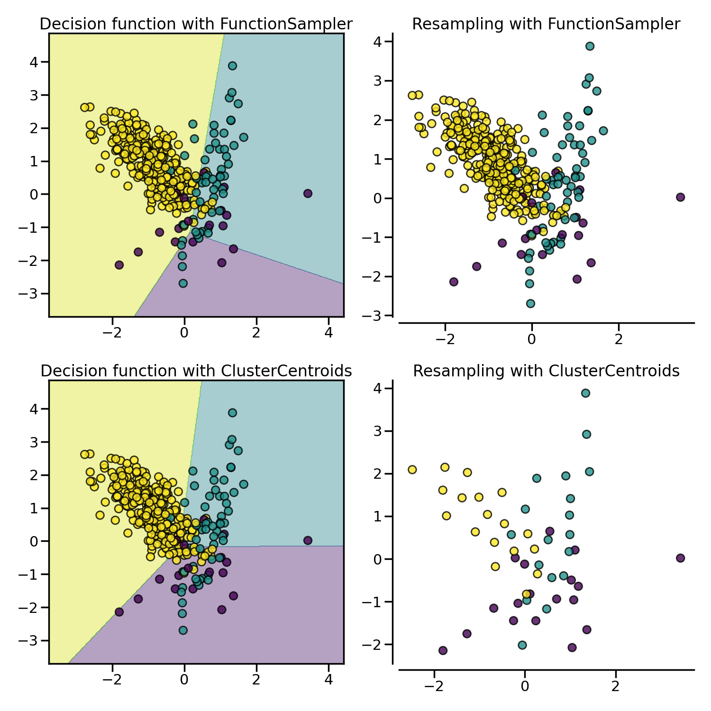
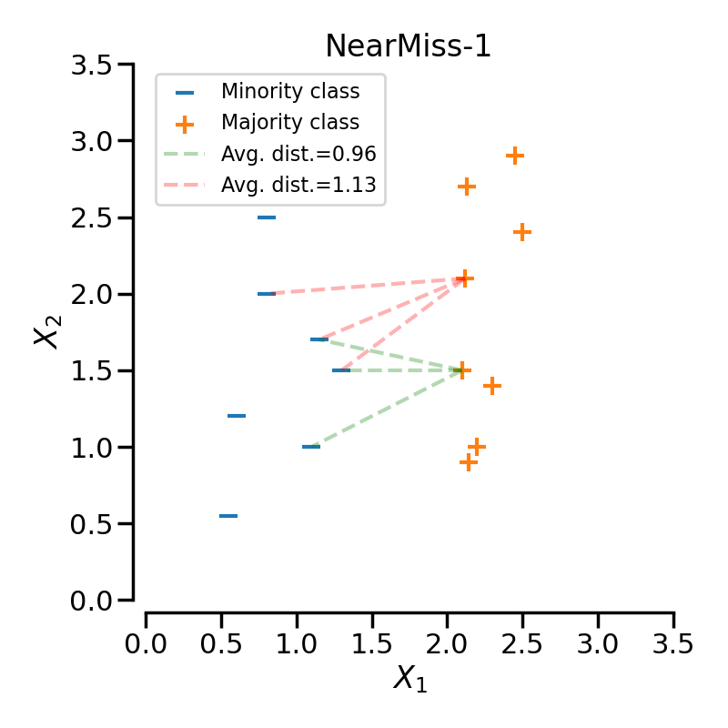
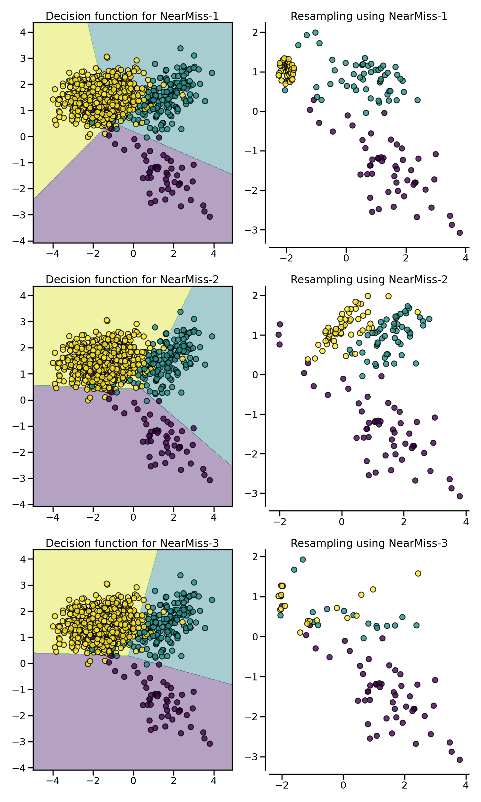

3. Under-sampling#
One way of handling imbalanced datasets is to reduce the number of observations from all classes but the minority class. The minority class is that with the least number of observations. The most well known algorithm in this group is random undersampling, where samples from the targeted classes are removed at random.
But there are many other algorithms to help us reduce the number of observations in the dataset. These algorithms can be grouped based on their undersampling strategy into:
Prototype generation methods.
Prototype selection methods.
And within the latter, we find:
Controlled undersampling
Cleaning methods
We will discuss the different algorithms throughout this document.
Check also Compare under-sampling samplers.
3.1. Prototype generation#
Given an original data set \(S\), prototype generation algorithms will generate a new set \(S'\) where \(|S'| < |S|\) and \(S' \not\subset S\). In other words, prototype generation techniques will reduce the number of samples in the targeted classes but the remaining samples are generated — and not selected — from the original set.
ClusterCentroids makes use of K-means to reduce the number of
samples. Therefore, each class will be synthesized with the centroids of the
K-means method instead of the original samples:
>>> from collections import Counter
>>> from sklearn.datasets import make_classification
>>> X, y = make_classification(n_samples=5000, n_features=2, n_informative=2,
... n_redundant=0, n_repeated=0, n_classes=3,
... n_clusters_per_class=1,
... weights=[0.01, 0.05, 0.94],
... class_sep=0.8, random_state=0)
>>> print(sorted(Counter(y).items()))
[(0, 64), (1, 262), (2, 4674)]
>>> from imblearn.under_sampling import ClusterCentroids
>>> cc = ClusterCentroids(random_state=0)
>>> X_resampled, y_resampled = cc.fit_resample(X, y)
>>> print(sorted(Counter(y_resampled).items()))
[(0, 64), (1, 64), (2, 64)]
The figure below illustrates such under-sampling.
ClusterCentroids offers an efficient way to represent the data cluster
with a reduced number of samples. Keep in mind that this method requires that
your data are grouped into clusters. In addition, the number of centroids
should be set such that the under-sampled clusters are representative of the
original one.
Warning
ClusterCentroids supports sparse matrices. However, the new samples
generated are not specifically sparse. Therefore, even if the resulting
matrix will be sparse, the algorithm will be inefficient in this regard.
3.2. Prototype selection#
Prototype selection algorithms will select samples from the original set \(S\), generating a dataset \(S'\), where \(|S'| < |S|\) and \(S' \subset S\). In other words, \(S'\) is a subset of \(S\).
Prototype selection algorithms can be divided into two groups: (i) controlled under-sampling techniques and (ii) cleaning under-sampling techniques.
Controlled under-sampling methods reduce the number of observations in the majority class or classes to an arbitrary number of samples specified by the user. Typically, they reduce the number of observations to the number of samples observed in the minority class.
In contrast, cleaning under-sampling techniques “clean” the feature space by removing either “noisy” or “too easy to classify” observations, depending on the method. The final number of observations in each class varies with the cleaning method and can’t be specified by the user.
3.2.1. Controlled under-sampling techniques#
Controlled under-sampling techniques reduce the number of observations from the targeted classes to a number specified by the user.
3.2.1.1. Random under-sampling#
RandomUnderSampler is a fast and easy way to balance the data by
randomly selecting a subset of data for the targeted classes:
>>> from imblearn.under_sampling import RandomUnderSampler
>>> rus = RandomUnderSampler(random_state=0)
>>> X_resampled, y_resampled = rus.fit_resample(X, y)
>>> print(sorted(Counter(y_resampled).items()))
[(0, 64), (1, 64), (2, 64)]
RandomUnderSampler allows bootstrapping the data by setting
replacement to True. When there are multiple classes, each targeted class is
under-sampled independently:
>>> import numpy as np
>>> print(np.vstack([tuple(row) for row in X_resampled]).shape)
(192, 2)
>>> rus = RandomUnderSampler(random_state=0, replacement=True)
>>> X_resampled, y_resampled = rus.fit_resample(X, y)
>>> print(np.vstack(np.unique([tuple(row) for row in X_resampled], axis=0)).shape)
(181, 2)
RandomUnderSampler handles heterogeneous data types, i.e. numerical,
categorical, dates, etc.:
>>> X_hetero = np.array([['xxx', 1, 1.0], ['yyy', 2, 2.0], ['zzz', 3, 3.0]],
... dtype=object)
>>> y_hetero = np.array([0, 0, 1])
>>> X_resampled, y_resampled = rus.fit_resample(X_hetero, y_hetero)
>>> print(X_resampled)
[['xxx' 1 1.0]
['zzz' 3 3.0]]
>>> print(y_resampled)
[0 1]
RandomUnderSampler also supports pandas dataframes as input for
undersampling:
>>> from sklearn.datasets import fetch_openml
>>> df_adult, y_adult = fetch_openml(
... 'adult', version=2, as_frame=True, return_X_y=True)
>>> df_adult.head()
>>> df_resampled, y_resampled = rus.fit_resample(df_adult, y_adult)
>>> df_resampled.head()
NearMiss adds some heuristic rules to select samples
[MZ03]. NearMiss implements 3 different types of
heuristic which can be selected with the parameter version:
>>> from imblearn.under_sampling import NearMiss
>>> nm1 = NearMiss(version=1)
>>> X_resampled_nm1, y_resampled = nm1.fit_resample(X, y)
>>> print(sorted(Counter(y_resampled).items()))
[(0, 64), (1, 64), (2, 64)]
As later stated in the next section, NearMiss heuristic rules are
based on nearest neighbors algorithm. Therefore, the parameters n_neighbors
and n_neighbors_ver3 accept classifier derived from KNeighborsMixin
from scikit-learn. The former parameter is used to compute the average distance
to the neighbors while the latter is used for the pre-selection of the samples
of interest.
3.2.1.2. Mathematical formulation#
Let positive samples be the samples belonging to the targeted class to be under-sampled. Negative sample refers to the samples from the minority class (i.e., the most under-represented class).
NearMiss-1 selects the positive samples for which the average distance to the \(N\) closest samples of the negative class is the smallest.
NearMiss-2 selects the positive samples for which the average distance to the \(N\) farthest samples of the negative class is the smallest.
NearMiss-3 is a 2-steps algorithm. First, for each negative sample, their \(M\) nearest-neighbors will be kept. Then, the positive samples selected are the one for which the average distance to the \(N\) nearest-neighbors is the largest.
In the next example, the different NearMiss variant are applied on the
previous toy example. It can be seen that the decision functions obtained in
each case are different.
When under-sampling a specific class, NearMiss-1 can be altered by the presence of noise. In fact, it will implied that samples of the targeted class will be selected around these samples as it is the case in the illustration below for the yellow class. However, in the normal case, samples next to the boundaries will be selected. NearMiss-2 will not have this effect since it does not focus on the nearest samples but rather on the farthest samples. We can imagine that the presence of noise can also altered the sampling mainly in the presence of marginal outliers. NearMiss-3 is probably the version which will be less affected by noise due to the first step sample selection.
3.2.2. Cleaning under-sampling techniques#
Cleaning under-sampling methods “clean” the feature space by removing either “noisy” observations or observations that are “too easy to classify”, depending on the method. The final number of observations in each targeted class varies with the cleaning method and cannot be specified by the user.
3.2.2.1. Tomek’s links#
A Tomek’s link exists when two samples from different classes are closest neighbors to each other.
Mathematically, a Tomek’s link between two samples from different classes \(x\) and \(y\) is defined such that for any sample \(z\):
where \(d(.)\) is the distance between the two samples.
TomekLinks detects and removes Tomek’s links [Tom76b]. The
underlying idea is that Tomek’s links are noisy or hard to classify observations and
would not help the algorithm find a suitable discrimination boundary.
In the following figure, a Tomek’s link between an observation of class \(+\) and class \(-\) is highlighted in green:
When TomekLinks finds a Tomek’s link, it can either remove the sample of the
majority class, or both. The parameter sampling_strategy controls which samples
from the link will be removed. By default (i.e., sampling_strategy='auto'), it will
remove the sample from the majority class. Both samples, that is that from the majority
and the one from the minority class, can be removed by setting sampling_strategy to
'all'.
The following figure illustrates this behaviour: on the left, only the sample from the majority class is removed, whereas on the right, the entire Tomek’s link is removed.

3.2.2.2. Editing data using nearest neighbours#
3.2.2.2.1. Edited nearest neighbours#
The edited nearest neighbours methodology uses K-Nearest Neighbours to identify the neighbours of the targeted class samples, and then removes observations if any or most of their neighbours are from a different class [Wil72].
EditedNearestNeighbours carries out the following steps:
Train a K-Nearest neighbours using the entire dataset.
Find each observations’ K closest neighbours (only for the targeted classes).
Remove observations if any or most of its neighbours belong to a different class.
Below the code implementation:
>>> sorted(Counter(y).items())
[(0, 64), (1, 262), (2, 4674)]
>>> from imblearn.under_sampling import EditedNearestNeighbours
>>> enn = EditedNearestNeighbours()
>>> X_resampled, y_resampled = enn.fit_resample(X, y)
>>> print(sorted(Counter(y_resampled).items()))
[(0, 64), (1, 213), (2, 4568)]
To paraphrase step 3, EditedNearestNeighbours will retain observations from
the majority class when most, or all of its neighbours are from the same class.
To control this behaviour we set kind_sel='mode' or kind_sel='all',
respectively. Hence, kind_sel='all' is less conservative than kind_sel='mode',
resulting in the removal of more samples:
>>> enn = EditedNearestNeighbours(kind_sel="all")
>>> X_resampled, y_resampled = enn.fit_resample(X, y)
>>> print(sorted(Counter(y_resampled).items()))
[(0, 64), (1, 213), (2, 4568)]
>>> enn = EditedNearestNeighbours(kind_sel="mode")
>>> X_resampled, y_resampled = enn.fit_resample(X, y)
>>> print(sorted(Counter(y_resampled).items()))
[(0, 64), (1, 234), (2, 4666)]
The parameter n_neighbors accepts integers. The integer refers to the number of
neighbours to examine for each sample. It can also take a classifier subclassed from
KNeighborsMixin from scikit-learn. When passing a classifier, note that, if you
pass a 3-Nearest Neighbors classifier, only 2 neighbours will be examined for the cleaning, as the
third sample is the one being examined for undersampling since it is part of the
samples provided at fit.
3.2.2.2.2. Repeated Edited Nearest Neighbours#
RepeatedEditedNearestNeighbours extends
EditedNearestNeighbours by repeating the algorithm multiple times
[Tom76a]. Generally, repeating the algorithm will delete
more data:
>>> from imblearn.under_sampling import RepeatedEditedNearestNeighbours
>>> renn = RepeatedEditedNearestNeighbours()
>>> X_resampled, y_resampled = renn.fit_resample(X, y)
>>> print(sorted(Counter(y_resampled).items()))
[(0, 64), (1, 208), (2, 4551)]
The user can set up the number of times the edited nearest neighbours method should be
repeated through the parameter max_iter.
The repetitions will stop when:
the maximum number of iterations is reached, or
no more observations are removed, or
one of the majority classes becomes a minority class, or
one of the majority classes disappears during the undersampling.
3.2.2.2.3. All KNN#
AllKNN is a variation of the
RepeatedEditedNearestNeighbours where the number of neighbours evaluated at
each round of EditedNearestNeighbours increases. It starts by editing based on
1-Nearest Neighbour, and it increases the neighbourhood by 1 at each iteration
[Tom76a]:
>>> from imblearn.under_sampling import AllKNN
>>> allknn = AllKNN()
>>> X_resampled, y_resampled = allknn.fit_resample(X, y)
>>> print(sorted(Counter(y_resampled).items()))
[(0, 64), (1, 220), (2, 4601)]
AllKNN stops cleaning when the maximum number of neighbours to examine, which
is determined by the user through the parameter n_neighbors is reached, or when the
majority class becomes the minority class.
In the example below, we see that EditedNearestNeighbours,
RepeatedEditedNearestNeighbours and AllKNN have similar impact when
cleaning “noisy” samples at the boundaries between classes.
3.2.2.3. Condensed nearest neighbors#
CondensedNearestNeighbour uses a 1 nearest neighbor rule to
iteratively decide if a sample should be removed
[Har68]. The algorithm runs as follows:
Get all minority samples in a set \(C\).
Add a sample from the targeted class (class to be under-sampled) in \(C\) and all other samples of this class in a set \(S\).
Train a 1-Nearest Neigbhour on \(C\).
Go through the samples in set \(S\), sample by sample, and classify each one using a 1 nearest neighbor rule (trained in 3).
If the sample is misclassified, add it to \(C\), and go to step 6.
Repeat steps 3 to 5 until all observations in \(S\) have been examined.
The final dataset is \(S\), containing all observations from the minority class and those from the majority that were miss-classified by the successive 1-Nearest Neigbhour algorithms.
The CondensedNearestNeighbour can be used in the following manner:
>>> from imblearn.under_sampling import CondensedNearestNeighbour
>>> cnn = CondensedNearestNeighbour(random_state=0)
>>> X_resampled, y_resampled = cnn.fit_resample(X, y)
>>> print(sorted(Counter(y_resampled).items()))
[(0, 64), (1, 24), (2, 115)]
CondensedNearestNeighbour is sensitive to noise and may add noisy samples
(see figure later on).
3.2.2.3.1. One Sided Selection#
In an attempt to remove the noisy observations introduced by
CondensedNearestNeighbour, OneSidedSelection
will first find the observations that are hard to classify, and then will use
TomekLinks to remove noisy samples [Har68].
OneSidedSelection runs as follows:
Get all minority samples in a set \(C\).
Add a sample from the targeted class (class to be under-sampled) in \(C\) and all other samples of this class in a set \(S\).
Train a 1-Nearest Neighbors on \(C\).
Using a 1 nearest neighbor rule trained in 3, classify all samples in set \(S\).
Add all misclassified samples to \(C\).
Remove Tomek Links from \(C\).
The final dataset is \(S\), containing all observations from the minority class, plus the observations from the majority that were added at random, plus all those from the majority that were miss-classified by the 1-Nearest Neighbors algorithms.
Note that differently from CondensedNearestNeighbour, OneSidedSelection
does not train a K-Nearest Neighbors after each sample is misclassified. It uses the
1-Nearest Neighbors from step 3 to classify all samples from the majority in 1 pass.
The class can be used as:
>>> from imblearn.under_sampling import OneSidedSelection
>>> oss = OneSidedSelection(random_state=0)
>>> X_resampled, y_resampled = oss.fit_resample(X, y)
>>> print(sorted(Counter(y_resampled).items()))
[(0, 64), (1, 174), (2, 4404)]
Our implementation offers the possibility to set the number of observations
to put at random in the set \(C\) through the parameter n_seeds_S.
NeighbourhoodCleaningRule will focus on cleaning the data than
condensing them [Lau01]. Therefore, it will used the
union of samples to be rejected between the EditedNearestNeighbours
and the output a 3 nearest neighbors classifier. The class can be used as:
>>> from imblearn.under_sampling import NeighbourhoodCleaningRule
>>> ncr = NeighbourhoodCleaningRule(n_neighbors=11)
>>> X_resampled, y_resampled = ncr.fit_resample(X, y)
>>> print(sorted(Counter(y_resampled).items()))
[(0, 64), (1, 193), (2, 4535)]
3.2.3. Additional undersampling techniques#
3.2.3.1. Instance hardness threshold#
Instance Hardness is a measure of how difficult it is to classify an instance or observation correctly. In other words, hard instances are observations that are hard to classify correctly.
Fundamentally, instances that are hard to classify correctly are those for which the learning algorithm or classifier produces a low probability of predicting the correct class label.
If we removed these hard instances from the dataset, the logic goes, we would help the classifier better identify the different classes [SMGC14].
InstanceHardnessThreshold trains a classifier on the data and then removes the
samples with lower probabilities [SMGC14]. Or in other words, it
retains the observations with the higher class probabilities.
In our implementation, InstanceHardnessThreshold is (almost) a controlled
under-sampling method: it will retain a specific number of observations of the target
class(es), which is specified by the user (see caveat below).
The class can be used as:
>>> from sklearn.linear_model import LogisticRegression
>>> from imblearn.under_sampling import InstanceHardnessThreshold
>>> iht = InstanceHardnessThreshold(random_state=0,
... estimator=LogisticRegression())
>>> X_resampled, y_resampled = iht.fit_resample(X, y)
>>> print(sorted(Counter(y_resampled).items()))
[(0, 64), (1, 64), (2, 64)]
InstanceHardnessThreshold has 2 important parameters. The parameter
estimator accepts any scikit-learn classifier with a method predict_proba.
This classifier will be used to identify the hard instances. The training is performed
with cross-validation which can be specified through the parameter ``cv`.
Note
InstanceHardnessThreshold could almost be considered as a
controlled under-sampling method. However, due to the probability outputs, it
is not always possible to get the specified number of samples.
The figure below shows examples of instance hardness undersampling on a toy dataset.